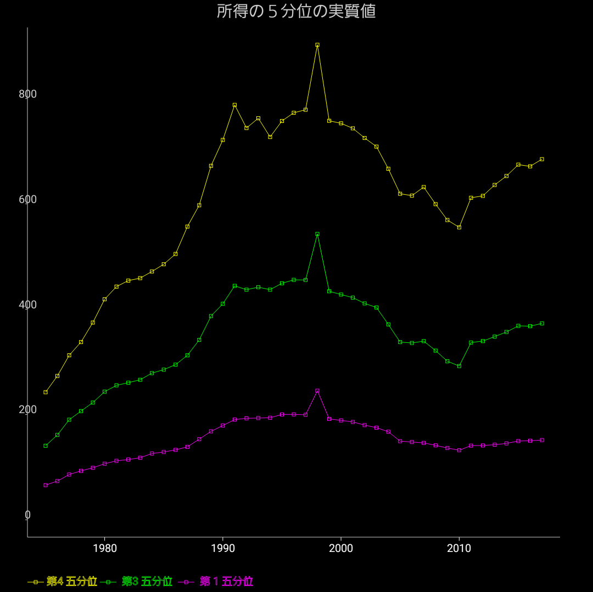

所得の五分位数の実質値

所得の五分位数の実質値の推移を見てみましょう。
五分位数とは所得を小さい順に並べて5等分した時のそれぞれの所得です。（1から4までの4つの数字となります）
所得は前回同様国税庁の納税者から作り、世帯別では無く納税者別で、実質化は2005年基準のGDPデフレータで実質化しています。
格差が拡大していて勝ち組と負け組の差が大きくなっている、などと言われていますが、このデータでは第4 五分位、つまり上位20%くらいでも、2000年代に所得が減っていっているのは変わらない事を示しています。
他の角度から見ると確かに格差が拡大しているように見える事もありますが、この切り口では全体的に貧しくなっているだけ、と解釈するのが自然に思われます。